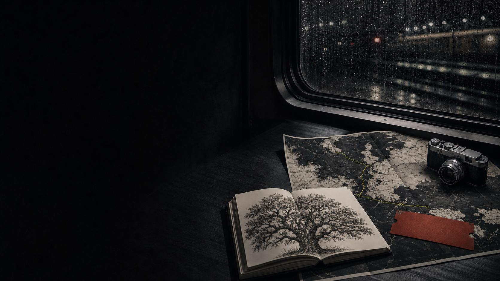
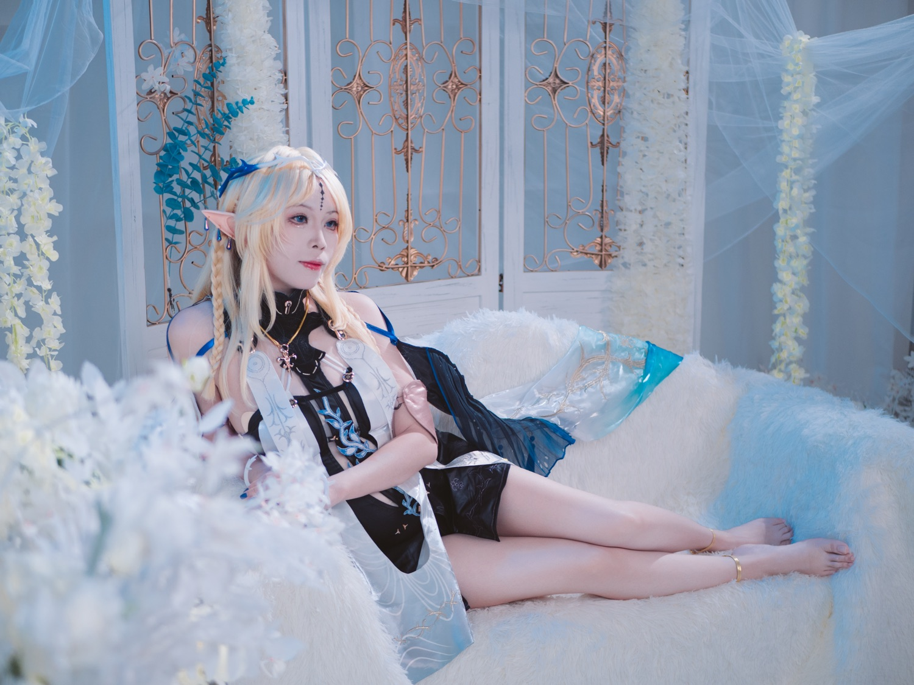
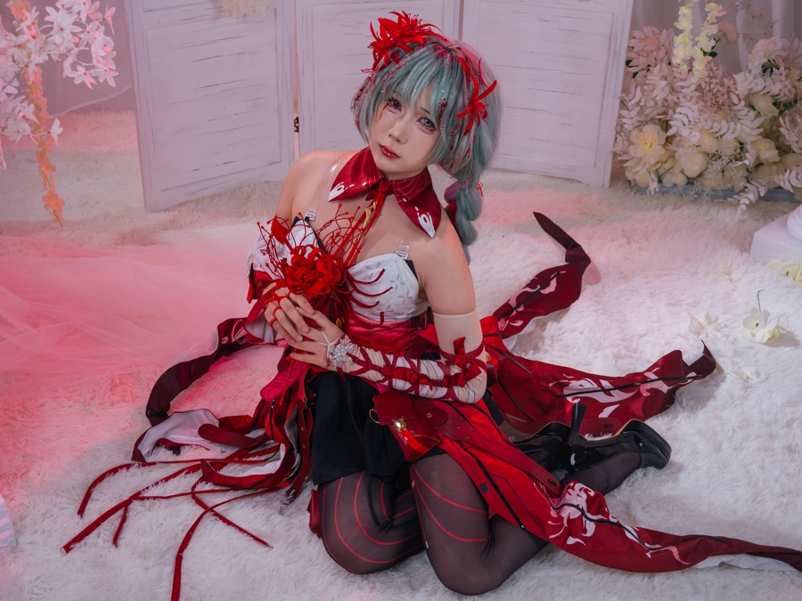
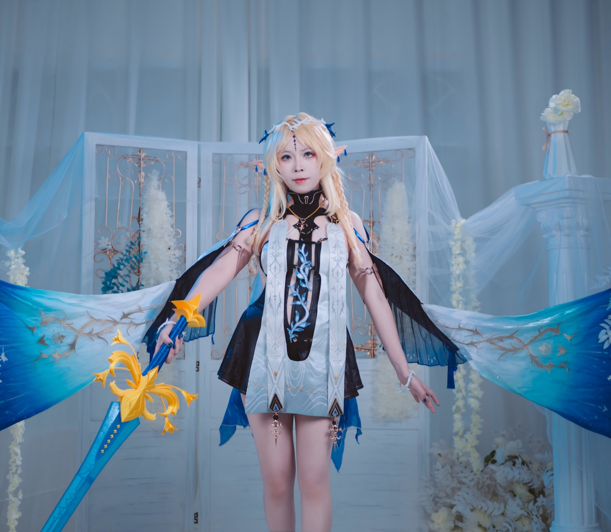
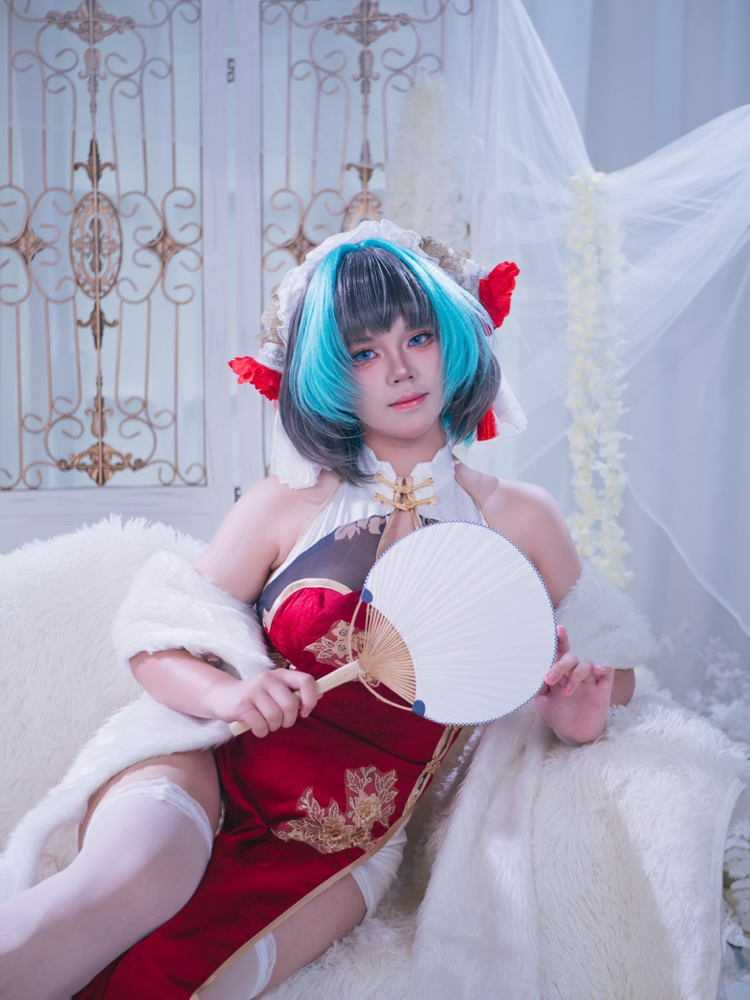
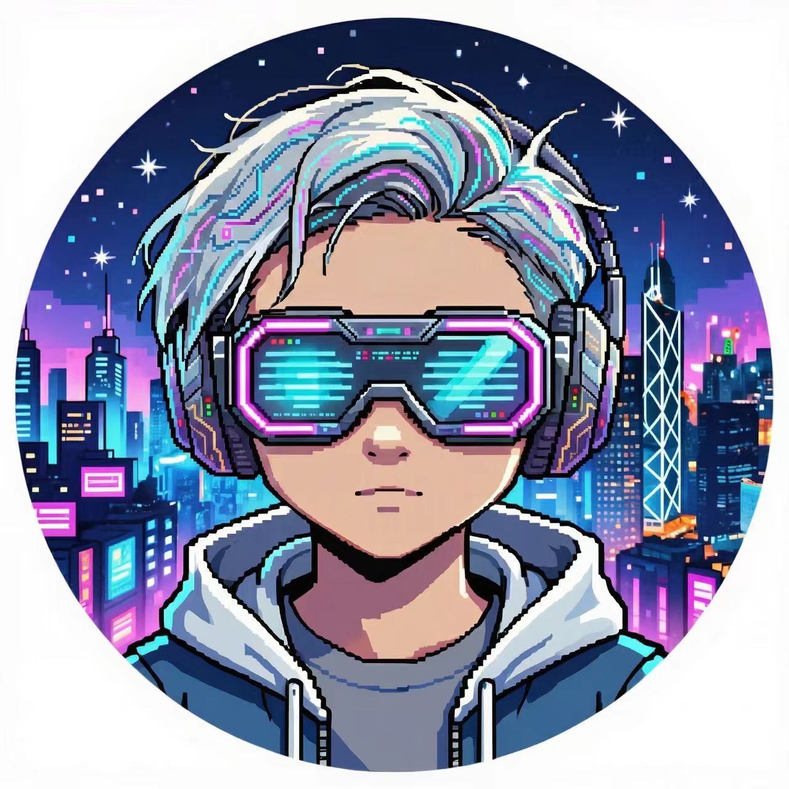

FIELD NOTE / 001 keep moving scroll to wander
01through my lens
photographs by white
镜头里的，
另一个世界。
从自然光里的片刻，到舞台布景构成的异世界。
我用画面保存那些语言还没来得及说出的东西。





A small selection from an expanding visual archive.
02thinking out loud
notes from the road
把世界
写下来。
有些风景不适合拍照。
它们需要被慢一点地记住。
03about white
a moving profile
写代码，也写
生活的支线。
我是 white，一名程序员，也是一个自由的灵魂旅行家。白天用代码把想法变成现实，离开屏幕后，我会认真做一顿饭、带着相机观察街头，或沉进主机游戏构建的另一个世界。
我喜欢技术的精确，也迷恋生活里无法计算的部分：一道菜的火候、按下快门前的一秒，以及夜之城霓虹下的选择。《赛博朋克 2077》是我最喜欢的游戏——不只因为它的未来感，更因为它始终在追问：在被设定好的世界里，一个人要怎样活成自己。
交换一封信 ↗
ID / 00101自由freedom
02行走movement
03观看attention
04创作making
04keep in touch